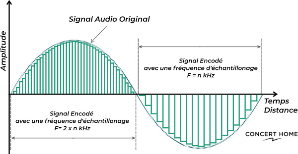

Qu'est-ce que, et pourquoi est-ce important ?
La fréquence d'échantillonnage est un concept clé en matière de traitement de signaux numériques. Elle détermine le nombre d'échantillons de données recueillis par unité de temps, et est utilisée dans de nombreux domaines, notamment l'audio, la vidéo, la mesure de la température et la surveillance environnementale.

Aujourd'hui, l'échantillonnage n'est pas une tâche extrèmement complexe pour nos ordinateurs, grâce au fait que l'échantillonnage soit la seule manière
de réellement enregister un signal sonore l'a répandu, et aujourd'hui, tous les ordinateurs possèdent un DAC et un ADC,
composants électroniques qui ont pour fonctions respectives de transformer un signal numérique en analogique et vice versa.
La transformation analogique-numérique n'est donc pas faite de manière logicielle mais matérielle, mais dès lors qu'on traite le son, qu'on le modifie, il faut passer par un logiciel et cela peut engendrer
des temps de calcul et des charges processeur conséquentes.